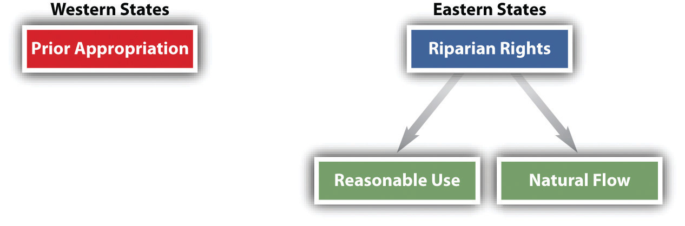
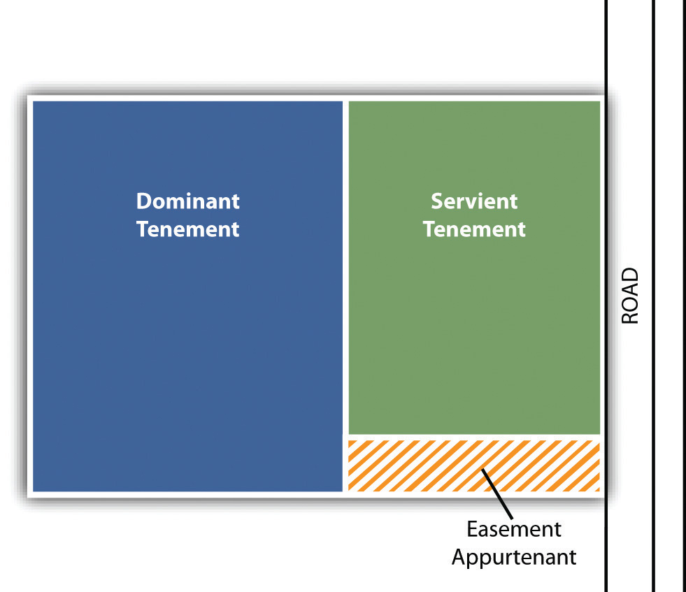

After reading this chapter, you should understand the following:
Real property is an important part of corporate as well as individual wealth. As a consequence, the role of the corporate real estate manager has become critically important within the corporation. The real estate manager must be aware not only of the value of land for purchase and sale but also of proper lease negotiation, tax policies and assessments, zoning and land development, and environmental laws.
In this chapter and in Chapter 31 "The Transfer of Real Estate by Sale" and Chapter 32 "Landlord and Tenant Law", we focus on regulation of land use and the environment (see Figure 28.1 "Chapter Overview"). We divide our discussion of the nature of real estate into three major categories: (1) estates; (2) rights that are incidental to the possession and ownership of land—for example, the right to air, water, and minerals; and (3) easements—the rights in lands of others.
In property law, an estate is an interest in real property, ranging from absolute dominion and control to bare possession. Ordinarily when we think of property, we think of only one kind: absolute ownership. The owner of a car has the right to drive it where and when she wants, rebuild it, repaint it, and sell it or scrap it. The notion that the owner might lose her property when a particular event happens is foreign to our concept of personal property. Not so with real property. You would doubtless think it odd if you were sold a used car subject to the condition that you not paint it a different color—and that if you did, you would automatically be stripped of ownership. But land can be sold that way. Land and other real property can be divided into many categories of interests, as we will see. (Be careful not to confuse the various types of interests in real property with the forms of ownership, such as joint tenancy. An interest in real property that amounts to an estate is a measure of the degree to which a thing is owned; the form of ownership deals with the particular person or persons who own it.)
Figure 28.1 Chapter Overview

The common law distinguishes estates along two main axes: (1) freeholds versus leaseholds and (2) present versus future interests. A freehold estateAn interest in land that has an uncertain duration. is an interest in land that has an uncertain duration. The freehold can be outright ownership—called the fee simple absolute—or it can be an interest in the land for the life of the possessor; in either case, it is impossible to say exactly how long the estate will last. In the case of one who owns property outright, her estate will last until she sells or transfers it; in the case of a life estate, it will last until the death of the owner or another specified individual. A leasehold estateAn estate whose termination date is usually known—a one-year lease, for example. is one whose termination date is usually known. A one-year lease, for example, will expire precisely at the time stated in the lease agreement.
A present estate is one that is currently owned and enjoyed; a future estate is one that will come into the owner’s possession upon the occurrence of a particular event. In this chapter, we consider both present and future freehold interests; leasehold interests we save for Chapter 32 "Landlord and Tenant Law".
The strongest form of ownership is known as the fee simple absoluteThe most extensive set of rights that can be conveyed in real property. (or fee simple, or merely fee). This is what we think of when we say that someone “owns” the land. As one court put it, “The grant of a fee in land conveys to the grantee complete ownership, immediately and forever, with the right of possession from boundary to boundary and from the center of the earth to the sky, together with all the lawful uses thereof.”Magnolia Petroleum Co. v. Thompson, 106 F.2d 217 (8th Cir. 1939). Although the fee simple may be encumbered by a mortgage (you may borrow money against the equity in your home) or an easement (you may grant someone the right to walk across your backyard), the underlying control is in the hands of the owner. Though it was once a complex matter in determining whether a person had been given a fee simple interest, today the law presumes that the estate being transferred is a fee simple, unless the conveyance expressly states to the contrary. (In her will, Lady Gaga grants her five-thousand-acre ranch “to my screen idol, Tilda Swinton.” On the death of Lady Gaga, Swinton takes ownership of the ranch outright in fee simple absolute.)
Not every transfer of real property creates a fee simple absolute. Some transfers may limit the estate. Any transfer specifying that the ownership will terminate upon a particular happening is known as a fee simple defeasibleAny transfer specifying that the ownership will terminate upon a particular happening.. Suppose, for example, that Mr. Warbucks conveys a tract of land “to Miss Florence Nightingale, for the purpose of operating her hospital and for no other purpose. Conveyance to be good as long as hospital remains on the property.” This grant of land will remain the property of Miss Nightingale and her heirs as long as she and they maintain a hospital. When they stop doing so, the land will automatically revert to Mr. Warbucks or his heirs, without their having to do anything to regain title. Note that the conveyance of land could be perpetual but is not absolute, because it will remain the property of Miss Nightingale only so long as she observes the conditions in the grant.
An estate measured by the life of a particular person is called a life estateAn estate measured by the life of a particular person. A conventional life estate is created privately by the parties themselves.. A conventional life estate is created privately by the parties themselves. The simplest form is that conveyed by the following words: “to Scarlett for life.” Scarlett becomes a life tenant; as such, she is the owner of the property and may occupy it for life or lease it or even sell it, but the new tenant or buyer can acquire only as much as Scarlett has to give, which is ownership for her life (i.e., all she can sell is a life estate in the land, not a fee simple absolute). If Scarlett sells the house and dies a month later, the buyer’s interest would terminate. A life estate may be based on the life of someone other than the life tenant: “to Scarlett for the life of Rhett.”
The life tenantSomeone who holds an estate in land for his or her life or the life of another. may use the property as though he were the owner in fee simple absolute with this exception: he may not act so as to diminish the value of the property that will ultimately go to the remainderman—the person who will become owner when the life estate terminates. The life tenant must pay the life estate for ordinary upkeep of the property, but the remainderman is responsible for extraordinary repairs.
Some life estates are created by operation of law and are known as legal life estates. The most common form is a widow’s interest in the real property of her husband. In about one-third of the states, a woman is entitled to dowerA statutory alternative to whatever is bequeathed in the will; the widow has the right to elect the share stated in the will or the share available under dower., a right to a percentage (often one-third) of the property of her husband when he dies. Most of these states give a widower a similar interest in the property of his deceased wife. Dower is an alternative to whatever is bequeathed in the will; the widow has the right to elect the share stated in the will or the share available under dower. To prevent the dower right from upsetting the interests of remote purchasers, the right may be waived on sale by having the spouse sign the deed.
To this point, we have been considering present estates. But people also can have future interests in real property. Despite the implications of its name, the future interest is owned now but is not available to be used or enjoyed now. For the most part, future interests may be bought and sold, just as land held in fee simple absolute may be bought and sold. There are several classes of future interests, but in general there are two major types: reversion and remainder.
A reversionA reversion arises whenever the estate transferred has a duration less than that originally owned by the transferor. arises whenever the estate transferred has a duration less than that originally owned by the transferor. A typical example of a simple reversion is that which arises when a life estate is conveyed. The ownership conveyed is only for the life; when the life tenant dies, the ownership interest reverts to the grantor. Suppose the grantor has died in the meantime. Who gets the reversion interest? Since the reversion is a class of property that is owned now, it can be inherited, and the grantor’s heirs would take the reversion at the subsequent death of the life tenant.
The transferor need not keep the reversion interest for himself. He can give that interest to someone else, in which case it is known as a remainderThe real property interest that remains after the life estate interest or other interest subject to defeasance. interest, because the remainder of the property is being transferred. Suppose the transferor conveys land with these words: “to Scarlett for life and then to Rhett.” Scarlett has a life estate; the remainder goes to Rhett in fee simple absolute. Rhett is said to have a vested remainder interest, because on Scarlett’s death, he or his heirs will automatically become owners of the property. Some remainder interests are contingent—and are therefore known as contingent remainder interests—on the happening of a certain event: “to my mother for her life, then to my sister if she marries Harold before my mother dies.” The transferor’s sister will become the owner of the property in fee simple only if she marries Harold while her mother is alive; otherwise, the property will revert to the transferor or his heirs. The number of permutations of reversions and remainders can become quite complex, far more than we have space to discuss in this text.
An estate is an interest in real property. Estates are of many kinds, but one generic difference is between ownership estates and possessory estates. Fee simple estates and life estates are ownership estates, while leasehold interests are possessory. Among ownership estates, the principal division is between present estates and future estates. An owner of a future estate has an interest that can be bought and sold and that will ripen into present possession at the end of a period of time, at the end of the life of another, or with the happening of some contingent event.
The traditional rule was stated by Lord Coke: “Whoever owns the soil owns up to the sky.” This traditional rule remains valid today, but its application can cause problems. A simple example would be a person who builds an extension to the upper story of his house so that it hangs out over the edge of his property line and thrusts into the airspace of his neighbor. That would clearly be an encroachment on the neighbor’s property. But is it trespass when an airplane—or an earth satellite—flies over your backyard? Obviously, the courts must balance the right to travel against landowners’ rights. In U.S. v. Causby,U.S. v. Causby, 328 U.S. 256 (1946). the Court determined that flights over private land may constitute a diminution in the property value if they are so low and so frequent as to be a direct and immediate interference with the enjoyment and use of land.
Lord Coke’s dictum applies to the depths as well as the sky. The owner of the surface has the right to the oil, gas, and minerals below it, although this right can be severed and sold separately. Perplexing questions may arise in the case of oil and gas, which can flow under the surface. Some states say that oil and gas can be owned by the owner of the surface land; others say that they are not owned until actually extracted—although the property owner may sell the exclusive right to extract them from his land. But states with either rule recognize that oil and gas are capable of being “captured” by drilling that causes oil or gas from under another plot of land to run toward the drilled hole. Since the possibility of capture can lead to wasteful drilling practices as everyone nearby rushes to capture the precious commodities, many states have enacted statutes requiring landowners to share the resources.
The right to determine how bodies of water will be used depends on basic property rules. Two different approaches to water use in the United States—eastern and western—have developed over time (see Figure 28.2 "Water Rights"). Eastern states, where water has historically been more plentiful, have adopted the so-called riparian rights theory, which itself can take two forms. Riparian refers to land that includes a part of the bed of a waterway or that borders on a public watercourse. A riparian owner is one who owns such land. What are the rights of upstream and downstream owners of riparian land regarding use of the waters? One approach is the “natural flow” doctrine: Each riparian owner is entitled to have the river or other waterway maintained in its natural state. The upstream owner may use the river for drinking water or for washing but may not divert it to irrigate his crops or to operate his mill if doing so would materially change the amount of the flow or the quality of the water. Virtually all eastern states today are not so restrictive and rely instead on a “reasonable use” doctrine, which permits the benefit to be derived from use of the waterway to be weighed against the gravity of the harm. This approach is illustrated in Hoover v. Crane, (see Section 28.6.1 "Reasonable Use Doctrine".Hoover v. Crane, 362 Mich. 36, 106 N.W.2d 563 (1960).
Figure 28.2 Water Rights
In contrast to riparian rights doctrines, western states have adopted the prior appropriation doctrine. This rule looks not to equality of interests but to priority in time: first in time is first in right. The first person to use the water for a beneficial purpose has a right superior to latecomers. This rule applies even if the first user takes all the water for his own needs and even if other users are riparian owners. This rule developed in water-scarce states in which development depended on incentives to use rather than hoard water. Today, the prior appropriation doctrine has come under criticism because it gives incentives to those who already have the right to the water to continue to use it profligately, rather than to those who might develop more efficient means of using it.
Property owners have certain rights in the airspace above their land. They also have rights in subsurface minerals, which include oil and gas. Those property owners who have bodies of water adjacent to their land will also have certain rights to withdraw or impound water for their own use. Regarding US water law, the reasonable use doctrine in the eastern states is distinctly different from the prior appropriation doctrine in western states.
An easementAn interest in land created by agreement that permits one person to make use of another’s estate. is an interest in land created by agreement that permits one person to make use of another’s estate. This interest can extend to a profit, the taking of something from the other’s land. Though the common law once distinguished between an easement and profit, today the distinction has faded, and profits are treated as a type of easement. An easement must be distinguished from a mere licenseAs opposed to an easement, a license is personal to the grantee and is not assignable., which is permission, revocable at the will of the owner, to make use of the owner’s land. An easement is an estate; a license is personal to the grantee and is not assignable.
The two main types of easements are affirmative and negative. An affirmative easement gives a landowner the right to use the land of another (e.g., crossing it or using water from it), while a negative easementAn easement that prohibits the owner of the land from using his or her land in ways that would affect the holder of the easement., by contrast, prohibits the landowner from using his land in ways that would affect the holder of the easement. For example, the builder of a solar home would want to obtain negative easements from neighbors barring them from building structures on their land that would block sunlight from falling on the solar home. With the growth of solar energy, some states have begun to provide stronger protection by enacting laws that regulate one’s ability to interfere with the enjoyment of sunlight. These laws range from a relatively weak statute in Colorado, which sets forth rules for obtaining easements, to the much stronger statute in California, which says in effect that the owner of a solar device has a vested right to continue to receive the sunlight.
Another important distinction is made between easements appurtenant and easements in gross. An easement appurtenantAn easement that benefits the owner of adjacent land. The easement is thus appurtenant to the holder’s land. benefits the owner of adjacent land. The easement is thus appurtenant to the holder’s land. The benefited land is called the dominant tenementThe land that benefits from an easement., and the burdened land—that is, the land subject to the easement—is called the servient tenementThe burdened land—that is, the land subject to the easement. (see Figure 28.3 "Easement Appurtenant"). An easement in gross is granted independent of the easement holder’s ownership or possession of land. It is simply an independent right—for example, the right granted to a local delivery service to drive its trucks across a private roadway to gain access to homes at the other end.
Figure 28.3 Easement Appurtenant
Unless it is explicitly limited to the grantee, an easement appurtenant “runs with the land.” That is, when the dominant tenement is sold or otherwise conveyed, the new owner automatically owns the easement. A commercial easement in gross may be transferred—for instance, easements to construct pipelines, telegraph and telephone lines, and railroad rights of way. However, most noncommercial easements in gross are not transferable, being deemed personal to the original owner of the easement. Rochelle sells her friend Mrs. Nanette—who does not own land adjacent to Rochelle—an easement across her country farm to operate skimobiles during the winter. The easement is personal to Mrs. Nanette; she could not sell the easement to anyone else.
Easements may be created by express agreement, either in deeds or in wills. The owner of the dominant tenement may buy the easement from the owner of the servient tenement or may reserve the easement for himself when selling part of his land. But courts will sometimes allow implied easements under certain circumstances. For instance, if the deed refers to an easement that bounds the premises—without describing it in any detail—a court could conclude that an easement was intended to pass with the sale of the property.
An easement can also be implied from prior use. Suppose a seller of land has two lots, with a driveway connecting both lots to the street. The only way to gain access to the street from the back lot is to use the driveway, and the seller has always done so. If the seller now sells the back lot, the buyer can establish an easement in the driveway through the front lot if the prior use was (1) apparent at the time of sale, (2) continuous, and (3) reasonably necessary for the enjoyment of the back lot. The rule of implied easements through prior use operates only when the ownership of the dominant and servient tenements was originally in the same person.
The servient owner may use the easement—remember, it is on or under or above his land—as long as his use does not interfere with the rights of the easement owner. Suppose you have an easement to walk along a path in the woods owned by your neighbor and to swim in a private lake that adjoins the woods. At the time you purchased the easement, your neighbor did not use the lake. Now he proposes to swim in it himself, and you protest. You would not have a sound case, because his swimming in the lake would not interfere with your right to do so. But if he proposed to clear the woods and build a mill on it, obliterating the path you took to the lake and polluting the lake with chemical discharges, then you could obtain an injunction to bar him from interfering with your easement.
The owner of the dominant tenement is not restricted to using his land as he was at the time he became the owner of the easement. The courts will permit him to develop the land in some “normal” manner. For example, an easement on a private roadway for the benefit of a large estate up in the hills would not be lost if the large estate were ultimately subdivided and many new owners wished to use the roadway; the easement applies to the entire portion of the original dominant tenement, not merely to the part that abuts the easement itself. However, the owner of an easement appurtenant to one tract of land cannot use the easement on another tract of land, even if the two tracts are adjacent.
An easement appurtenant runs with the land and benefits the dominant tenement, burdening the servient tenement. An easement, generally, has a specific location or description within or over the servient tenement. Easements can be created by deed, by will, or by implication.
Land use regulation falls into three broad categories: (1) restriction on the use of land through tort law, (2) private regulation by agreement, and (3) public ownership or regulation through the powers of eminent domain and zoning.
Tort law is used to regulate land use in two ways: (1) The owner may become liable for certain activities carried out on the real estate that affect others beyond the real estate. (2) The owner may be liable to persons who, upon entering the real estate, are injured.
The two most common torts in this area are nuisance and trespass. A common-law nuisanceA common-law nuisance is an interference with the use and enjoyment of one’s land. is an interference with the use and enjoyment of one’s land. Examples of nuisances are excessive noise (especially late at night), polluting activities, and emissions of noxious odors. But the activity must produce substantial harm, not fleeting, minor injury, and it must produce those effects on the reasonable person, not on someone who is peculiarly allergic to the complained-of activity. A person who suffered migraine headaches at the sight of croquet being played on a neighbor’s lawn would not likely win a nuisance lawsuit. While the meaning of nuisance is difficult to define with any precision, this common-law cause of action is a primary means for landowners to obtain damages for invasive environmental harms.
A trespassThe wrongful physical invasion of or entry upon land possessed by another. is the wrongful physical invasion of or entry upon land possessed by another. Loud noise blaring out of speakers in the house next door might be a nuisance but could not be a trespass, because noise is not a physical invasion. But spraying pesticides on your gladiolas could constitute a trespass on your neighbor’s property if the pesticide drifts across the boundary.
Nuisance and trespass are complex theories, a full explanation of which would consume far more space than we have. What is important to remember is that these torts are two-edged swords. In some situations, the landowner himself will want to use these theories to sue trespassers or persons creating a nuisance, but in other situations, the landowner will be liable under these theories for his own activities.
Traditionally, liability for injury has depended on the status of the person who enters the real estate.
If the person is an intruder without permission—a trespasser—the landowner owes him no duty of care unless he knows of the intruder’s presence, in which case the owner must exercise reasonable care in his activities and warn of hidden dangers on his land of which he is aware. A known trespasser is someone whom the landowner actually sees on the property or whom he knows frequently intrudes on the property, as in the case of someone who habitually walks across the land. If a landowner knows that people frequently walk across his property and one day he puts a poisonous chemical on the ground to eliminate certain insects, he is obligated to warn those who continue to walk on the grounds. Intentional injury to known trespassers is not allowed, even if the trespasser is a criminal intent on robbery, for the law values human life above property rights.
If the trespasser is a child, a different rule applies in most states. This is the doctrine of attractive nuisanceA thing or condition on land that is attractive to small children and represents a distinct hazard to their health or well-being.. Originally this rule was enunciated to deal with cases in which something on the land attracted the child to it, like a swimming pool. In recent years, most courts have dropped the requirement that the child must have been attracted to the danger. Instead, the following elements of proof are necessary to make out a case of attractive nuisance (Restatement of Torts, Section 339):
Old refrigerators, open gravel pits, or mechanisms that a curious child would find inviting are all examples of attractive nuisance. Suppose Farmer Brown keeps an old buggy on his front lawn, accessible from the street. A five-year-old boy clambers up the buggy one day, falls through a rotted floorboard, and breaks his leg. Is Farmer Brown liable? Probably so. The child was too young to appreciate the danger posed by the buggy, a structure. The farmer should have appreciated that young children would be likely to come onto the land when they saw the buggy and that they would be likely to climb up onto the buggy. Moreover, he should have known, if he did not know in fact, that the buggy, left outside for years without being tended, would pose an unreasonable risk. The buggy’s utility as a decoration was far overbalanced by the risk that it posed to children, and the farmer failed to exercise reasonable care.
A nontrespasser who comes onto the land without being invited, or if invited, comes for purposes unconnected with any business conducted on the premises, is known as a licenseeA noninvitee to the land, such as a social guest, a salesman not invited by the owner to the property, or someone else not on the property for an invited business purpose.. This class of visitors to the land consists of (1) social guests (people you invite to your home for a party); (2) a salesman, not invited by the owner, who wishes to sell something to the owner or occupier of the property; and (3) persons visiting a building for a purpose not connected with the business on the land (e.g., students who visit a factory to see how it works). The landowner owes the same duty of care to licensees that he owes to known trespassers. That is, he must warn them against hidden dangers of which he is aware, and he must exercise reasonable care in his activities to ensure that they are not injured.
A final category of persons entering land is that of inviteeA person who has been invited onto real property for purpose of potential economic benefit to the owner or occupier of the land.. This is one who has been invited onto the land, usually, though not necessarily, for a business purpose of potential economic benefit to the owner or occupier of the premises. This category is confusing because it sounds as though it should include social guests (who clearly are invited onto the premises), but traditionally social guests are said to be licensees.
Invitees include customers of stores, users of athletic and other clubs, customers of repair shops, strollers through public parks, restaurant and theater patrons, hotel guests, and the like. From the owner’s perspective, the major difference between licensees and invitees is that he is liable for injuries resulting to the latter from hidden dangers that he should have been aware of, even if he is not actually aware of the dangers. How hidden the dangers are and how broad the owner’s liability is depends on the circumstances, but liability sometimes can be quite broad. Difficult questions arise in lawsuits brought by invitees (or business invitees, as they are sometimes called) when the actions of persons other than the landowner contribute to the injury.
The foregoing rules dealing with liability for persons entering the land are the traditional rules at common law. In recent years, some courts have moved away from the rigidities and sometimes perplexing differences between trespassers, licensees, and invitees. By court decision, several states have now abolished such distinctions and hold the proprietor, owner, or occupier liable for failing to maintain the premises in a reasonably safe condition. According to the California Supreme Court,
A man’s life or limb does not become less worthy of protection by the law nor a loss less worthy of compensation under the law because he has come upon the land of another without permission or with permission but without a business purpose. Reasonable people do not ordinarily vary their conduct depending upon such matters, and to focus upon the status of the injured party as a trespasser, licensee, or invitee in order to determine the question whether the landowner has a duty of care, is contrary to our modern social mores and humanitarian values. Where the occupier of land is aware of a concealed condition involving in the absence of precautions an unreasonable risk of harm to those coming in contact with it and is aware that a person on the premises is about to come in contact with it, the trier of fact can reasonably conclude that a failure to warn or to repair the condition constitutes negligence. Whether or not a guest has a right to expect that his host will remedy dangerous conditions on his account, he should reasonably be entitled to rely upon a warning of the dangerous condition so that he, like the host, will be in a position to take special precautions when he comes in contact with it.Rowland v. Christian, 443 P.2d 561 (Cal. 1968).
A restrictive covenant is an agreement regarding the use of land that “runs with the land.” In effect, it is a contractual promise that becomes part of the property and that binds future owners. Violations of covenants can be redressed in court in suits for damages or injunctions but will not result in reversion of the land to the seller.
Usually, courts construe restrictive covenants narrowly—that is, in a manner most conducive to free use of the land by the ultimate owner (the person against whom enforcement of the covenant is being sought). Sometimes, even when the meaning of the covenant is clear, the courts will not enforce it. For example, when the character of a neighborhood changes, the courts may declare the covenant a nullity. Thus a restriction on a one-acre parcel to residential purposes was voided when in the intervening thirty years a host of businesses grew up around it, including a bowling alley, restaurant, poolroom, and sewage disposal plant.Norris v. Williams, 54 A.2d 331 (Md. 1947).
An important nullification of restrictive covenants came in 1947 when the US Supreme Court struck down as unconstitutional racially restrictive covenants, which barred blacks and other minorities from living on land so burdened. The Supreme Court reasoned that when a court enforces such a covenant, it acts in a discriminatory manner (barring blacks but not whites from living in a home burdened with the covenant) and thus violates the Fourteenth Amendment’s guarantee of equal protection of the laws.Shelley v. Kraemer, 334 U.S. 1 (1947).
The government may take private property for public purposes. Its power to do so is known as eminent domain. The power of eminent domain is subject to constitutional limitations. Under the Fifth Amendment, the property must be put to public use, and the owner is entitled to “just compensation” for his loss. These requirements are sometimes difficult to apply.
The requirement of public use normally means that the property will be useful to the public once the state has taken possession—for example, private property might be condemned to construct a highway. Although not allowed in most circumstances, the government could even condemn someone’s property in order to turn around and sell it to another individual, if a legitimate public purpose could be shown. For example, a state survey in the mid-1960s showed that the government owned 49 percent of Hawaii’s land. Another 47 percent was controlled by seventy-two private landowners. Because this concentration of land ownership (which dated back to feudal times) resulted in a critical shortage of residential land, the Hawaiian legislature enacted a law allowing the government to take land from large private estates and resell it in smaller parcels to homeowners. In 1984, the US Supreme Court upheld the law, deciding that the land was being taken for a public use because the purpose was “to attack certain perceived evils of concentrated property ownership.”Hawaii Housing Authority v. Midkiff, 467 U.S. 229 (1984). Although the use must be public, the courts will not inquire into the necessity of the use or whether other property might have been better suited. It is up to government authorities to determine whether and where to build a road, not the courts.
The limits of public use were amply illustrated in the Supreme Court’s 2002 decision of Kelo v. New London,Kelo v. New London, 545 U.S. 469 (2005). in which Mrs. Kelo’s house was condemned so that the city of New London, in Connecticut, could create a marina and industrial park to lease to Pfizer Corporation. The city’s motives were to create a higher tax base for property taxes. The Court, following precedent in Midkiff and other cases, refused to invalidate the city’s taking on constitutional grounds. Reaction from states was swift; many states passed new laws restricting the bases for state and municipal governments to use powers of eminent domain, and many of these laws also provided additional compensation to property owners whose land was taken.
The owner is ordinarily entitled to the fair market value of land condemned under eminent domain. This value is determined by calculating the most profitable use of the land at the time of the taking, even though it was being put to a different use. The owner will have a difficult time collecting lost profits; for instance, a grocery store will not usually be entitled to collect for the profits it might have made during the next several years, in part because it can presumably move elsewhere and continue to make profits and in part because calculating future profits is inherently speculative.
The most difficult question in most modern cases is whether the government has in fact “taken” the property. This is easy to answer when the government acquires title to the property through condemnation proceedings. But more often, a government action is challenged when a law or regulation inhibits the use of private land. Suppose a town promulgates a setback ordinance, requiring owners along city sidewalks to build no closer to the sidewalk than twenty feet. If the owner of a small store had only twenty-five feet of land from the sidewalk line, the ordinance would effectively prevent him from housing his enterprise, and the ordinance would be a taking. Challenging such ordinances can sometimes be difficult under traditional tort theories because the government is immune from suit in some of these cases. Instead, a theory of inverse condemnation has developed, in which the plaintiff private property owner asserts that the government has condemned the property, though not through the traditional mechanism of a condemnation proceeding.
ZoningA process by which a city or other municipality regulates the type of activity to be permitted. is a technique by which a city or other municipality regulates the type of activity to be permitted in geographical areas within its boundaries. Though originally limited to residential, commercial, and industrial uses, today’s zoning ordinances are complex sets of regulations. A typical municipality might have the following zones: residential with a host of subcategories (such as for single-family and multiple-family dwellings), office, commercial, industrial, agricultural, and public lands. Zones may be exclusive, in which case office buildings would not be permitted in commercial zones, or they may be cumulative, so that a more restricted use would be allowed in a less restrictive zone. Zoning regulations do more than specify the type of use: they often also dictate minimum requirements for parking, open usable space, setbacks, lot sizes, and the like, and maximum requirements for height, length of side lots, and so on.
When a zoning ordinance is enacted, it will almost always affect existing property owners, many of whom will be using their land in ways no longer permitted under the ordinance. To avoid the charge that they have thereby “taken” the property, most ordinances permit previous nonconforming uses to continue, though some ordinances limit the nonconforming uses to a specified time after becoming effective. But this permission to continue a nonconforming use is narrow; it extends only to the specific use to which the property was put before the ordinance was enacted. A manufacturer of dresses that suddenly finds itself in an area zoned residential may continue to use its sewing machines, but it could not develop a sideline in woodworking.
Sometimes an owner may desire to use his property in ways not permitted under an existing zoning scheme and will ask the zoning board for a variancePermission by zoning authorities to carry on a nonconforming use.—authority to carry on a nonconforming use. The board is not free to grant a variance at its whim. The courts apply three general tests to determine the validity of a variance: (1) The land must be unable to yield a reasonable return on the uses allowed by the zoning regulation. (2) The hardship must be unique to the property, not to property generally in the area. (3) If granted, the variance must not change the essential character of the neighborhood.
Land use regulation can mean (1) restrictions on the use of land through tort law, (2) private regulation—by agreement, or (3) regulation through powers of eminent domain or zoning.
In one sense, environmental law is very old. Medieval England had smoke control laws that established the seasons when soft coal could be burned. Nuisance laws give private individuals a limited control over polluting activities of adjacent landowners. But a comprehensive set of US laws directed toward general protection of the environment is largely a product of the past quarter-century, with most of the legislative activity stemming from the late 1960s and later, when people began to perceive that the environment was systematically deteriorating from assaults by rapid population growth and greatly increased automobile driving, vast proliferation of factories that generate waste products, and a sharp rise in the production of toxic materials. Two of the most significant developments in environmental law came in 1970, when the National Environmental Policy Act took effect and the Environmental Protection Agency became the first of a number of new federal administrative agencies to be established during the decade.
Signed into law by President Nixon on January 1, 1970, the National Environmental Policy Act (NEPA) declared that it shall be the policy of the federal government, in cooperation with state and local governments, “to create and maintain conditions under which man and nature can exist in productive harmony, and fulfill the social, economic, and other requirements of present and future generations of Americans.…The Congress recognizes that each person should enjoy a healthful environment and that each person has a responsibility to contribute to the preservation and enhancement of the environment.”42 United States Code, Section 4321 et seq.
The most significant aspect of NEPA is its requirement that federal agencies prepare an environmental impact statementA statement mandated by the National Environmental Policy Act that is required of most federal agencies and includes an assessment of whether the agency’s actions will significantly affect environmental quality. in every recommendation or report on proposals for legislation and whenever undertaking a major federal action that significantly affects environmental quality. The statement must (1) detail the environmental impact of the proposed action, (2) list any unavoidable adverse impacts should the action be taken, (3) consider alternatives to the proposed action, (4) compare short-term and long-term consequences, and (5) describe irreversible commitments of resources. Unless the impact statement is prepared, the project can be enjoined from proceeding. Note that NEPA does not apply to purely private activities but only to those proposed to be carried out in some manner by federal agencies.
The Environmental Protection Agency (EPA) has been in the forefront of the news since its creation in 1970. Charged with monitoring environmental practices of industry, assisting the government and private business to halt environmental deterioration, promulgating regulations consistent with federal environmental policy, and policing industry for violations of the various federal environmental statutes and regulations, the EPA has had a pervasive influence on American business. Business Week noted the following in 1977: “Cars rolling off Detroit’s assembly line now have antipollution devices as standard equipment. The dense black smokestack emissions that used to symbolize industrial prosperity are rare, and illegal, sights. Plants that once blithely ran discharge water out of a pipe and into a river must apply for permits that are almost impossible to get unless the plants install expensive water treatment equipment. All told, the EPA has made a sizable dent in man-made environmental filth.”“The Tricks of the Trade-off,” Business Week, April 4, 1977, 72.
The EPA is especially active in regulating water and air pollution and in overseeing the disposition of toxic wastes and chemicals. To these problems we now turn.
Legislation governing the nation’s waterways goes back a long time. The first federal water pollution statute was the Rivers and Harbors Act of 1899. Congress enacted new laws in 1948, 1956, 1965, 1966, and 1970. But the centerpiece of water pollution enforcement is the Clean Water Act of 1972 (technically, the Federal Water Pollution Control Act Amendments of 1972), as amended in 1977 and by the Water Quality Act of 1987. The Clean Water Act is designed to restore and maintain the “chemical, physical, and biological integrity of the Nation’s waters.”33 United States Code, Section 1251. It operates on the states, requiring them to designate the uses of every significant body of water within their borders (e.g., for drinking water, recreation, commercial fishing) and to set water quality standards to reduce pollution to levels appropriate for each use.
Congress only has power to regulate interstate commerce, and so the Clean Water Act is applicable only to “navigable waters” of the United States. This has led to disputes over whether the act can apply, say, to an abandoned gravel pit that has no visible connection to navigable waterways, even if the gravel pit provides habitat for migratory birds. In Solid Waste Agency of Northern Cook County v. Army Corps of Engineers, the US Supreme Court said no.Solid Waste Agency of Northern Cook County v. Army Corps of Engineers, 531 U.S. 159 (2001).
The Clean Water Act also governs private industry and imposes stringent standards on the discharge of pollutants into waterways and publicly owned sewage systems. The act created an effluent permit system known as the National Pollutant Discharge Elimination System. To discharge any pollutants into navigable waters from a “point source” like a pipe, ditch, ship, or container, a company must obtain a certification that it meets specified standards, which are continually being tightened. For example, until 1983, industry had to use the “best practicable technology” currently available, but after July 1, 1984, it had to use the “best available technology” economically achievable. Companies must limit certain kinds of “conventional pollutants” (such as suspended solids and acidity) by “best conventional control technology.”
Federal law governs, and the EPA regulates, a number of other water control measures. Ocean dumping, for example, is the subject of the Marine Protection, Research, and Sanctuaries Act of 1972, which gives the EPA jurisdiction over wastes discharged into the oceans. The Clean Water Act gives the EPA and the US Army Corps of Engineers authority to protect waters, marshlands, and other wetlands against degradation caused by dredging and fills. The EPA also oversees state and local plans for restoring general water quality to acceptable levels in the face of a host of non-point-source pollution. The Clean Water Act controls municipal sewage systems, which must ensure that wastewater is chemically treated before being discharged from the sewage system.
Obviously, of critical importance to the nation’s health is the supply of drinking water. To ensure its continuing purity, Congress enacted the Safe Drinking Water Act of 1974, with amendments passed in 1986 and 1996. This act aims to protect water at its sources: rivers, lakes, reservoirs, springs, and groundwater wells. (The act does not regulate private wells that serve fewer than twenty-five individuals.) This law has two strategies for combating pollution of drinking water. It establishes national standards for drinking water derived from both surface reservoirs and underground aquifers. It also authorizes the EPA to regulate the injection of solid wastes into deep wells (as happens, for instance, by leakage from underground storage tanks).
The centerpiece of the legislative effort to clean the atmosphere is the Clean Air Act of 1970 (amended in 1975, 1977, and 1990). Under this act, the EPA has set two levels of National Ambient Air Quality Standards (NAAQS). The primary standards limit the ambient (i.e., circulating) pollution that affects human health; secondary standards limit pollution that affects animals, plants, and property. The heart of the Clean Air Act is the requirement that subject to EPA approval, the states implement the standards that the EPA establishes. The setting of these pollutant standards was coupled with directing the states to develop state implementation plans (SIPs), applicable to appropriate industrial sources in the state, in order to achieve these standards. The act was amended in 1977 and 1990 primarily to set new goals (dates) for achieving attainment of NAAQS since many areas of the country had failed to meet the deadlines.
Beyond the NAAQS, the EPA has established several specific standards to control different types of air pollution. One major type is pollution that mobile sources, mainly automobiles, emit. The EPA requires new cars to be equipped with catalytic converters and to use unleaded gasoline to eliminate the most noxious fumes and to keep them from escaping into the atmosphere. To minimize pollution from stationary sources, the EPA also imposes uniform standards on new industrial plants and those that have been substantially modernized. And to safeguard against emissions from older plants, states must promulgate and enforce SIPs.
The Clean Air Act is even more solicitous of air quality in certain parts of the nation, such as designated wilderness areas and national parks. For these areas, the EPA has set standards to prevent significant deterioration in order to keep the air as pristine and clear as it was centuries ago.
The EPA also worries about chemicals so toxic that the tiniest quantities could prove fatal or extremely hazardous to health. To control emission of substances like asbestos, beryllium, mercury, vinyl chloride, benzene, and arsenic, the EPA has established or proposed various National Emissions Standards for Hazardous Air Pollutants.
Concern over acid rain and other types of air pollution prompted Congress to add almost eight hundred pages of amendments to the Clean Air Act in 1990. (The original act was fifty pages long.) As a result of these amendments, the act was modernized in a manner that parallels other environmental laws. For instance, the amendments established a permit system that is modeled after the Clean Water Act. And the amendments provide for felony convictions for willful violations, similar to penalties incorporated into other statutes.
The amendments include certain defenses for industry. Most important, companies are protected from allegations that they are violating the law by showing that they were acting in accordance with a permit. In addition to this “permit shield,” the law also contains protection for workers who unintentionally violate the law while following their employers’ instructions.
Though pollution of the air by highly toxic substances like benzene or vinyl chloride may seem a problem removed from that of the ordinary person, we are all in fact polluters. Every year, the United States generates approximately 230 million tons of “trash”—about 4.6 pounds per person per day. Less than one-quarter of it is recycled; the rest is incinerated or buried in landfills. But many of the country’s landfills have been closed, either because they were full or because they were contaminating groundwater. Once groundwater is contaminated, it is extremely expensive and difficult to clean it up. In the 1965 Solid Waste Disposal Act and the 1970 Resource Recovery Act, Congress sought to regulate the discharge of garbage by encouraging waste management and recycling. Federal grants were available for research and training, but the major regulatory effort was expected to come from the states and municipalities.
But shocking news prompted Congress to get tough in 1976. The plight of homeowners near Love Canal in upstate New York became a major national story as the discovery of massive underground leaks of toxic chemicals buried during the previous quarter century led to evacuation of hundreds of homes. Next came the revelation that Kepone, an exceedingly toxic pesticide, had been dumped into the James River in Virginia, causing a major human health hazard and severe damage to fisheries in the James and downstream in the Chesapeake Bay. The rarely discussed industrial dumping of hazardous wastes now became an open controversy, and Congress responded in 1976 with the Resource Conservation and Recovery Act (RCRA) and the Toxic Substances Control Act (TSCA) and in 1980 with the Comprehensive Environmental Response, Compensation, and Liability Act (CERCLA).
The RCRA expresses a “cradle-to-grave” philosophy: hazardous wastes must be regulated at every stage. The act gives the EPA power to govern their creation, storage, transport, treatment, and disposal. Any person or company that generates hazardous waste must obtain a permit (known as a “manifest”) either to store it on its own site or ship it to an EPA-approved treatment, storage, or disposal facility. No longer can hazardous substances simply be dumped at a convenient landfill. Owners and operators of such sites must show that they can pay for damage growing out of their operations, and even after the sites are closed to further dumping, they must set aside funds to monitor and maintain the sites safely.
This philosophy can be severe. In 1986, the Supreme Court ruled that bankruptcy is not a sufficient reason for a company to abandon toxic waste dumps if state regulations reasonably require protection in the interest of public health or safety. The practical effect of the ruling is that trustees of the bankrupt company must first devote assets to cleaning up a dump site, and only from remaining assets may they satisfy creditors.Midlantic National Bank v. New Jersey, 474 U.S. 494 (1986). Another severity is RCRA’s imposition of criminal liability, including fines of up to $25,000 a day and one-year prison sentences, which can be extended beyond owners to individual employees, as discussed in U.S. v. Johnson & Towers, Inc., et al., (see Section 28.6.2 "Criminal Liability of Employees under RCRA").
The CERCLA, also known as the Superfund, gives the EPA emergency powers to respond to public health or environmental dangers from faulty hazardous waste disposal, currently estimated to occur at more than seventeen thousand sites around the country. The EPA can direct immediate removal of wastes presenting imminent danger (e.g., from train wrecks, oil spills, leaking barrels, and fires). Injuries can be sudden and devastating; in 1979, for example, when a freight train derailed in Florida, ninety thousand pounds of chlorine gas escaped from a punctured tank car, leaving 8 motorists dead and 183 others injured and forcing 3,500 residents within a 7-mile radius to be evacuated. The EPA may also carry out “planned removals” when the danger is substantial, even if immediate removal is not necessary.
The EPA prods owners who can be located to voluntarily clean up sites they have abandoned. But if the owners refuse, the EPA and the states will undertake the task, drawing on a federal trust fund financed mainly by taxes on the manufacture or import of certain chemicals and petroleum (the balance of the fund comes from general revenues). States must finance 10 percent of the cost of cleaning up private sites and 50 percent of the cost of cleaning up public facilities. The EPA and the states can then assess unwilling owners’ punitive damages up to triple the cleanup costs.
Cleanup requirements are especially controversial when applied to landowners who innocently purchased contaminated property. To deal with this problem, Congress enacted the Superfund Amendment and Reauthorization Act in 1986, which protects innocent landowners who—at the time of purchase—made an “appropriate inquiry” into the prior uses of the property. The act also requires companies to publicly disclose information about hazardous chemicals they use. We now turn to other laws regulating chemical hazards.
Chemical substances that decades ago promised to improve the quality of life have lately shown their negative side—they have serious adverse side effects. For example, asbestos, in use for half a century, causes cancer and asbestosis, a debilitating lung disease, in workers who breathed in fibers decades ago. The result has been crippling disease and death and more than thirty thousand asbestos-related lawsuits filed nationwide. Other substances, such as polychlorinated biphenyls (PCBs) and dioxin, have caused similar tragedy. Together, the devastating effects of chemicals led to enactment of the TSCA, designed to control the manufacture, processing, commercial distribution, use, and disposal of chemicals that pose unreasonable health or environmental risks. (The TSCA does not apply to pesticides, tobacco, nuclear materials, firearms and ammunition, food, food additives, drugs, and cosmetics—all are regulated by other federal laws.)
The TSCA gives the EPA authority to screen for health and environmental risks by requiring companies to notify the EPA ninety days before manufacturing or importing new chemicals. The EPA may demand that the companies test the substances before marketing them and may regulate them in a number of ways, such as requiring the manufacturer to label its products, to keep records on its manufacturing and disposal processes, and to document all significant adverse reactions in people exposed to the chemicals. The EPA also has authority to ban certain especially hazardous substances, and it has banned the further production of PCBs and many uses of asbestos.
Both industry groups and consumer groups have attacked the TSCA. Industry groups criticize the act because the enforcement mechanism requires mountainous paperwork and leads to widespread delay. Consumer groups complain because the EPA has been slow to act against numerous chemical substances. The debate continues.
The United States is a major user of pesticides, substances that eliminate troublesome insects, rodents, fungi, and bacteria, consuming more than a billion pounds a year in the form of thirty-five thousand separate chemicals. As useful as they can be, like many chemical substances, pesticides can have serious side effects on humans and plant and animal life. Beginning in the early 1970s, Congress enacted major amendments to the Federal Insecticide, Fungicide, and Rodenticide Act of 1947 and the Federal Food, Drug, and Cosmetic Act (FFDCA) of 1906.
These laws direct the EPA to determine whether pesticides properly balance effectiveness against safety. If the pesticide can carry out its intended function without causing unreasonable adverse effects on human health or the environment, it may remain on the market. Otherwise, the EPA has authority to regulate or even ban its distribution and use. To enable the EPA to carry out its functions, the laws require manufacturers to provide a wealth of data about the way individual pesticides work and their side effects. The EPA is required to inspect pesticides to ensure that they conform to their labeled purposes, content, and safety, and the agency is empowered to certify pesticides for either general or restricted use. If a pesticide is restricted, only those persons certified in approved training programs may use it. Likewise, under the Pesticide Amendment to the FFDCA, the EPA must establish specific tolerances for the residue of pesticides on feed crops and both raw and processed foods. The Food and Drug Administration (for agricultural commodities) and the US Department of Agriculture (for meat, poultry, and fish products) enforce these provisions.
Under the Noise Regulation Act of 1972, Congress has attempted to combat a growing menace to US workers, residents, and consumers. People who live close to airports and major highways, workers who use certain kinds of machinery (e.g., air compressors, rock drills, bulldozers), and consumers who use certain products, such as power mowers and air conditioners, often suffer from a variety of ailments. The Noise Regulation Act delegates to the EPA power to limit “noise emissions” from these major sources of noise. Under the act, manufacturers may not sell new products that fail to conform to the noise standards the EPA sets, and users are forbidden from dismantling noise control devices installed on these products. Moreover, manufacturers must label noisy products properly. Private suits may be filed against violators, and the act also permits fines of up to $25,000 per day and a year in jail for those who seek to avoid its terms.
The terrifying effects of a nuclear disaster became frighteningly clear when the Soviet Union’s nuclear power plant at Chernobyl exploded in early 1986, discharging vast quantities of radiation into the world’s airstream and affecting people thousands of miles away. In the United States, the most notorious nuclear accident occurred at the Three Mile Island nuclear utility in Pennsylvania in 1979, crippling the facility for years because of the extreme danger and long life of the radiation. Primary responsibility for overseeing nuclear safety rests with the Nuclear Regulatory Commission, but many other agencies and several federal laws (including the Clean Air Act; the Federal Water Pollution Control Act; the Safe Drinking Water Act; the Uranium Mill Tailings Radiation Control Act; the Marine Protection, Research, and Sanctuaries Act; the Nuclear Waste Policy Act of 1982; the CERCLA; and the Ocean Dumping Act) govern the use of nuclear materials and the storage of radioactive wastes (some of which will remain severely dangerous for thousands of years). Through many of these laws, the EPA has been assigned the responsibility of setting radiation guidelines, assessing new technology, monitoring radiation in the environment, setting limits on release of radiation from nuclear utilities, developing guidance for use of X-rays in medicine, and helping to plan for radiation emergencies.
Laws limiting the use of one’s property have been around for many years; common-law restraints (e.g., the law of nuisance) exist as causes of action against those who would use their property to adversely affect the life or health of others or the value of their neighbors’ property. Since the 1960s, extensive federal laws governing the environment have been enacted. These include laws governing air, water, chemicals, pesticides, solid waste, and nuclear activities. Some laws include criminal penalties for noncompliance.
Hoover v. Crane
362 Mich. 36, 106 N.W.2d 563 (1960)
EDWARDS, JUSTICE
This appeal represents a controversy between plaintiff cottage and resort owners on an inland Michigan lake and defendant, a farmer with a fruit orchard, who was using the lake water for irrigation. The chancellor who heard the matter ruled that defendant had a right to reasonable use of lake water. The decree defined such reasonable use in terms which were unsatisfactory to plaintiffs who have appealed.
The testimony taken before the chancellor pertained to the situation at Hutchins Lake, in Allegan county, during the summer of 1958. Defendant is a fruit farmer who owns a 180-acre farm abutting on the lake. Hutchins Lake has an area of 350 acres in a normal season. Seventy-five cottages and several farms, including defendant’s, abut on it. Defendant’s frontage is approximately 1/4 mile, or about 10% of the frontage of the lake.
Hutchins Lake is spring fed. It has no inlet but does have an outlet which drains south. Frequently in the summertime the water level falls so that the flow at the outlet ceases.
All witnesses agreed that the summer of 1958 was exceedingly dry and plaintiffs’ witnesses testified that Hutchins Lake’s level was the lowest it had ever been in their memory. Early in August, defendant began irrigation of his 50-acre pear orchard by pumping water out of Hutchins Lake. During that month the lake level fell 6 to 8 inches—the water line receded 50 to 60 feet and cottagers experienced severe difficulties with boating and swimming.
* * *
The tenor of plaintiffs’ testimony was to attribute the 6- to 8-inch drop in the Hutchins Lake level in that summer to defendant’s irrigation activities. Defendant contended that the decrease was due to natural causes, that the irrigation was of great benefit to him and contributed only slightly to plaintiff’s discomfiture. He suggests to us:
One could fairly say that because plaintiffs couldn’t grapple with the unknown causes that admittedly occasioned a greater part of the injury complained of, they chose to grapple mightily with the defendant because he is known and visible.
The circuit judge found it impossible to determine a normal lake level from the testimony, except that the normal summer level of the lake is lower than the level at which the lake ceases to drain into the outlet. He apparently felt that plaintiffs’ problems were due much more to the abnormal weather conditions of the summer of 1958 than to defendant’s irrigation activities.
His opinion concluded:
Accepting the reasonable use theory advanced by plaintiffs it appears to the court that the most equitable disposition of this case would be to allow defendant to use water from the lake until such time when his use interferes with the normal use of his neighbors. One quarter inch of water from the lake ought not to interfere with the rights and uses of defendant’s neighbors and this quantity of water ought to be sufficient in time of need to service 45 acres of pears. A meter at the pump, sealed if need be, ought to be a sufficient safeguard. Pumping should not be permitted between the hours of 11 p.m. and 7 a.m. Water need be metered only at such times as there is no drainage into the outlet.
The decree in this suit may provide that the case be kept open for the submission of future petitions and proofs as the conditions permit or require.
* * *
Michigan has adopted the reasonable-use rule in determining the conflicting rights of riparian owners to the use of lake water.
In 1874, Justice COOLEY said:
It is therefore not a diminution in the quantity of the water alone, or an alteration in its flow, or either or both of these circumstances combined with injury, that will give a right of action, if in view of all the circumstances, and having regard to equality of right in others, that which has been done and which causes the injury is not unreasonable. In other words, the injury that is incidental to a reasonable enjoyment of the common right can demand no redress. Dumont v. Kellogg, 29 Mich 420, 425.
And in People v. Hulbert, the Court said:
No statement can be made as to what is such reasonable use which will, without variation or qualification, apply to the facts of every case. But in determining whether a use is reasonable we must consider what the use is for; its extent, duration, necessity, and its application; the nature and size of the stream, and the several uses to which it is put; the extent of the injury to the one proprietor and of the benefit to the other; and all other facts which may bear upon the reasonableness of the use. Red River Roller Mills v. Wright, 30 Minn 249, 15 NW 167, and cases cited.
The Michigan view is in general accord with 4 Restatement, Torts, §§ 851–853.
* * *
We interpret the circuit judge’s decree as affording defendant the total metered equivalent in pumpage of 1/4 inch of the content of Hutchins Lake to be used in any dry period in between the cessation of flow from the outlet and the date when such flow recommences. Where the decree also provides for the case to be kept open for future petitions based on changed conditions, it would seem to afford as much protection for plaintiffs as to the future as this record warrants.
Both resort use and agricultural use of the lake are entirely legitimate purposes. Neither serves to remove water from the watershed. There is, however, no doubt that the irrigation use does occasion some water loss due to increased evaporation and absorption. Indeed, extensive irrigation might constitute a threat to the very existence of the lake in which all riparian owners have a stake; and at some point the use of the water which causes loss must yield to the common good.
The question on this appeal is, of course, whether the chancellor’s determination of this point was unreasonable as to plaintiffs. On this record, we cannot overrule the circuit judge’s view that most of plaintiffs’ 1958 plight was due to natural causes. Nor can we say, if this be the only irrigation use intended and the only water diversion sought, that use of the amount provided in the decree during the dry season is unreasonable in respect to other riparian owners.
Affirmed.
U.S. v. Johnson & Towers, Inc., Jack W. Hopkins, and Peter Angel
741 F.2d 662 (1984)
SLOVITER, Circuit Judge
Before us is the government’s appeal from the dismissal of three counts of an indictment charging unlawful disposal of hazardous wastes under the Resource Conservation and Recovery Act. In a question of first impression regarding the statutory definition of “person,” the district court concluded that the Act’s criminal penalty provision imposing fines and imprisonment could not apply to the individual defendants. We will reverse.
The criminal prosecution in this case arose from the disposal of chemicals at a plant owned by Johnson & Towers in Mount Laurel, New Jersey. In its operations the company, which repairs and overhauls large motor vehicles, uses degreasers and other industrial chemicals that contain chemicals such as methylene chloride and trichlorethylene, classified as “hazardous wastes” under the Resource Conservation and Recovery Act (RCRA), 42 U.S.C. §§ 6901–6987 (1982) and “pollutants” under the Clean Water Act, 33 U.S.C. §§ 1251–1376 (1982). During the period relevant here, the waste chemicals from cleaning operations were drained into a holding tank and, when the tank was full, pumped into a trench. The trench flowed from the plant property into Parker’s Creek, a tributary of the Delaware River. Under RCRA, generators of such wastes must obtain a permit for disposal from the Environmental Protection Agency (E.P.A.). The E.P.A. had neither issued nor received an application for a permit for Johnson & Towers’ operations.
The indictment named as defendants Johnson & Towers and two of its employees, Jack Hopkins, a foreman, and Peter Angel, the service manager in the trucking department. According to the indictment, over a three-day period federal agents saw workers pump waste from the tank into the trench, and on the third day observed toxic chemicals flowing into the creek.
Count 1 of the indictment charged all three defendants with conspiracy under 18 U.S.C. § 371 (1982). Counts 2, 3, and 4 alleged violations under the RCRA criminal provision, 42 U.S.C. § 6928(d) (1982). Count 5 alleged a violation of the criminal provision of the Clean Water Act, 33 U.S.C. § 1319(c) (1982). Each substantive count also charged the individual defendants as aiders and abettors under 18 U.S.C. § 2 (1982).
The counts under RCRA charged that the defendants “did knowingly treat, store, and dispose of, and did cause to be treated, stored and disposed of hazardous wastes without having obtained a permit…in that the defendants discharged, deposited, injected, dumped, spilled, leaked and placed degreasers…into the trench.…” The indictment alleged that both Angel and Hopkins “managed, supervised and directed a substantial portion of Johnson & Towers’ operations…including those related to the treatment, storage and disposal of the hazardous wastes and pollutants” and that the chemicals were discharged by “the defendants and others at their direction.” The indictment did not otherwise detail Hopkins’ and Angel’s activities or responsibilities.
Johnson & Towers pled guilty to the RCRA counts. Hopkins and Angel pled not guilty, and then moved to dismiss counts 2, 3, and 4. The court concluded that the RCRA criminal provision applies only to “owners and operators,” i.e., those obligated under the statute to obtain a permit. Since neither Hopkins nor Angel was an “owner” or “operator,” the district court granted the motion as to the RCRA charges but held that the individuals could be liable on these three counts under 18 U.S.C. § 2 for aiding and abetting. The court denied the government’s motion for reconsideration, and the government appealed to this court under 18 U.S.C. § 3731 (1982).
* * *
The single issue in this appeal is whether the individual defendants are subject to prosecution under RCRA’s criminal provision, which applies to:
any person who—
.…
(2) knowingly treats, stores, or disposes of any hazardous waste identified or listed under this subchapter either—
(A) without having obtained a permit under section 6925 of this title…or
(B) in knowing violation of any material condition or requirement of such permit.
42 U.S.C. § 6928(d) (emphasis added). The permit provision in section 6925, referred to in section 6928(d), requires “each person owning or operating a facility for the treatment, storage, or disposal of hazardous waste identified or listed under this subchapter to have a permit” from the E.P.A.
The parties offer contrary interpretations of section 6928(d)(2)(A). Defendants consider it an administrative enforcement mechanism, applying only to those who come within section 6925 and fail to comply; the government reads it as penalizing anyone who handles hazardous waste without a permit or in violation of a permit. Neither party has cited another case, nor have we found one, considering the application of this criminal provision to an individual other than an owner or operator.
As in any statutory analysis, we are obliged first to look to the language and then, if needed, attempt to divine Congress’ specific intent with respect to the issue.
First, “person” is defined in the statute as “an individual, trust, firm, joint stock company, corporation (including a government corporation), partnership, association, State, municipality, commission, political subdivision of a State, or any interstate body.” 42 U.S.C. § 6903(15) (1982). Had Congress meant in section 6928(d)(2)(A) to take aim more narrowly, it could have used more narrow language. Since it did not, we attribute to “any person” the definition given the term in section 6903(15).
Second, under the plain language of the statute the only explicit basis for exoneration is the existence of a permit covering the action. Nothing in the language of the statute suggests that we should infer another provision exonerating persons who knowingly treat, store or dispose of hazardous waste but are not owners or operators.
Finally, though the result may appear harsh, it is well established that criminal penalties attached to regulatory statutes intended to protect public health, in contrast to statutes based on common law crimes, are to be construed to effectuate the regulatory purpose.
* * *
Congress enacted RCRA in 1976 as a “cradle-to-grave” regulatory scheme for toxic materials, providing “nationwide protection against the dangers of improper hazardous waste disposal.” H.R. Rep. No. 1491, 94th Cong., 2d Sess. 11, reprinted in 1976 U.S. Code Cong. & Ad. News 6238, 6249. RCRA was enacted to provide “a multifaceted approach toward solving the problems associated with the 3–4 billion tons of discarded materials generated each year, and the problems resulting from the anticipated 8% annual increase in the volume of such waste.” Id. at 2, 1976 U.S. Code Cong. & Ad. News at 6239. The committee reports accompanying legislative consideration of RCRA contain numerous statements evincing the Congressional view that improper disposal of toxic materials was a serious national problem.
The original statute made knowing disposal (but not treatment or storage) of such waste without a permit a misdemeanor. Amendments in 1978 and 1980 expanded the criminal provision to cover treatment and storage and made violation of section 6928 a felony. The fact that Congress amended the statute twice to broaden the scope of its substantive provisions and enhance the penalty is a strong indication of Congress’ increasing concern about the seriousness of the prohibited conduct.
We conclude that in RCRA, no less than in the Food and Drugs Act, Congress endeavored to control hazards that, “in the circumstances of modern industrialism, are largely beyond self-protection.” United States v. Dotterweich, 320 U.S. at 280. It would undercut the purposes of the legislation to limit the class of potential defendants to owners and operators when others also bear responsibility for handling regulated materials. The phrase “without having obtained a permit under section 6925” (emphasis added) merely references the section under which the permit is required and exempts from prosecution under section 6928(d)(2)(A) anyone who has obtained a permit; we conclude that it has no other limiting effect. Therefore we reject the district court’s construction limiting the substantive criminal provision by confining “any person” in section 6928(d)(2)(A) to owners and operators of facilities that store, treat or dispose of hazardous waste, as an unduly narrow view of both the statutory language and the congressional intent.
An estate is an interest in real property; it is the degree to which a thing is owned. Freehold estates are those with an uncertain duration; leaseholds are estates due to expire at a definite time. A present estate is one that is currently owned; a future estate is one that is owned now but not yet available for use.
Present estates are (1) the fee simple absolute; (2) the fee simple defeasible, which itself may be divided into three types, and (3) the life estate.
Future estates are generally of two types: reversion and remainder. A reversion arises whenever a transferred estate will endure for a shorter time than that originally owned by the transferor. A remainder interest arises when the transferor gives the reversion interest to someone else.
Use of air, earth, and water are the major rights incident to ownership of real property. Traditionally, the owner held “up to the sky” and “down to the depths,” but these rules have been modified to balance competing rights in a modern economy. The law governing water rights varies with the states; in general, the eastern states with more plentiful water have adopted either the natural flow doctrine or the reasonable use doctrine of riparian rights, giving those who live along a waterway certain rights to use the water. By contrast, western states have tended to apply the prior appropriation doctrine, which holds that first in time is first in right, even if those downstream are disadvantaged.
An easement is an interest in land—created by express agreement, prior use, or necessity—that permits one person to make use of another’s estate. An affirmative easement gives one person the right to use another’s land; a negative easement prevents the owner from using his land in a way that will affect another person’s land. In understanding easement law, the important distinctions are between easements appurtenant and in gross, and between dominant and servient owners.
The law not only defines the nature of the property interest but also regulates land use. Tort law regulates land use by imposing liability for (1) activities that affect those off the land and (2) injuries caused to people who enter it. The two most important theories relating to the former are nuisance and trespass. With respect to the latter, the common law confusingly distinguishes among trespassers, licensees, and invitees. Some states are moving away from the perplexing and rigid rules of the past and simply require owners to maintain their property in a reasonably safe condition.
Land use may also be regulated by private agreement through the restrictive covenant, an agreement that “runs with the land” and that will be binding on any subsequent owner. Land use is also regulated by the government’s power under eminent domain to take private land for public purposes (upon payment of just compensation), through zoning laws, and through recently enacted environmental statutes, including the National Environmental Policy Act and laws governing air, water, treatment of hazardous wastes, and chemicals.
A freehold estate is defined as an estate
A fee simple defeasible is a type of
A reversion is
An easement is an interest in land that may be created by
The prior appropriation doctrine